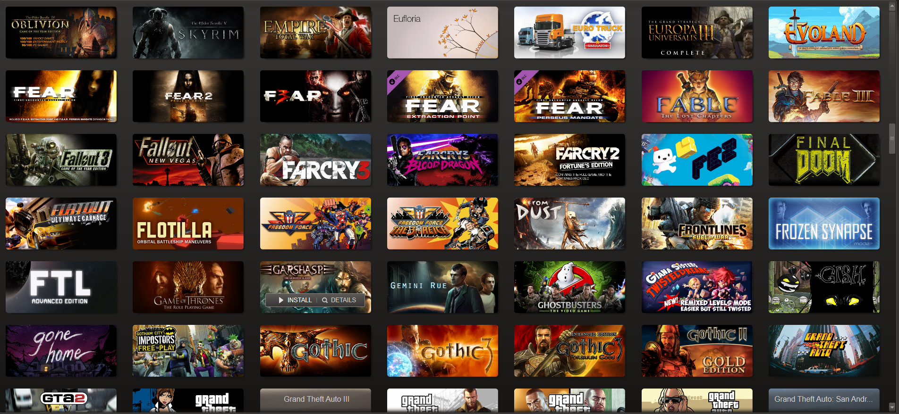

Video Game(PC/Laptop) Facts
PC gaming has pimarily been at the forefront of electronic gamingover the past few decades. With bigger machines and equipment, they are able to process and display data much faster and smoother than that of its console counterparts. The basic setup you would need is a monitor, a mouse, a keyboard, a PC tower and possibly a graphic/audio cable (HDMI) from the tower to the monitor. If you have been into PC gaming or even built your own PC and are looking to upgrade some parts, we have or can special order whatever you may require.
Our stock of games are mostly digital but we do however carry a small stock of each game for those that are collectors or like having it in disc form. Like console gaming, you have the ability to play across dozens and dozens of genres, by yourself, with friends, or online against/with people around the world. To purchase any games, setups, or parts click on our "Purchase Games" tab to the left to access our store page.